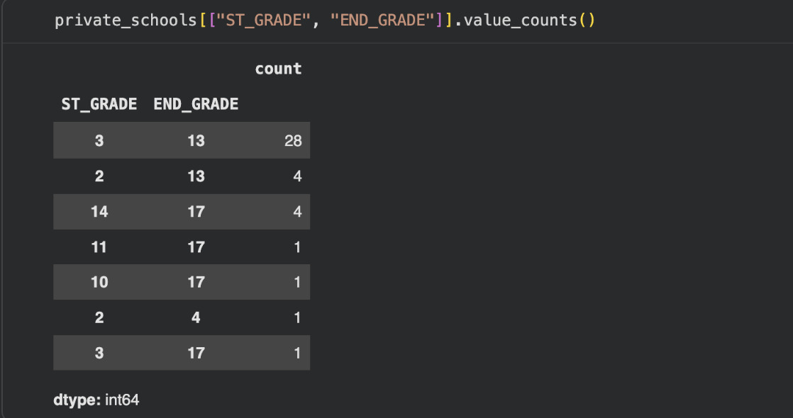
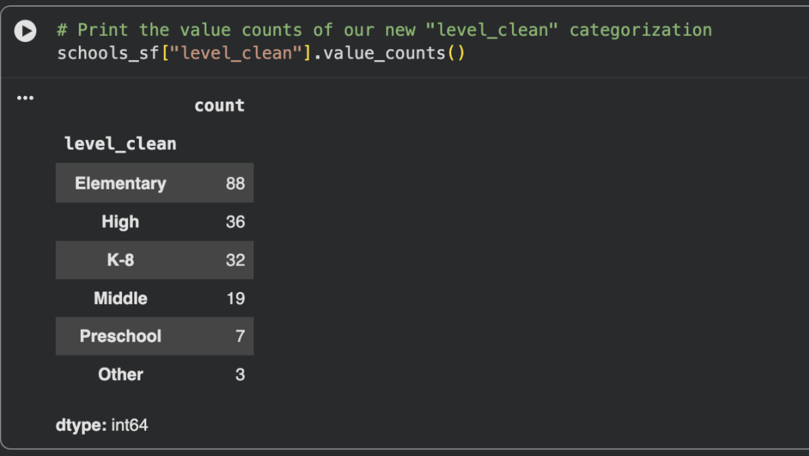

Aiji Li, Anika Sikka, Danielle Murphy, Kathryn Sun
With our project we explore methods of investigating and analyzing the experience of middle school and high school students in San Francisco. We examine how access to parks and recreation facilities, public spaces, and transit accessibility varies throughout the city. We investigate if there are differences across public vs. private schools.
We combined multiple geospatial datasets including public and private school locations (Oak Ridge National Laboratory, 2025), OpenStreetMap street networks processed through OSMnx for walkability analysis, San Francisco Recreation & Parks assets for green-space accessibility, San Francisco Planning's 2023 Land Use dataset, and U.S. Census ACS 5-Year Estimates for demographic context. All datasets were projected, cleaned, and integrated in GeoPandas for spatial analysis and visualization.
How does access to parks and recreation facilities, public spaces, and transit accessibility vary throughout the city in the context of proximity to schools. Consequently, are there differences in accessibility across public and private schools?
When considering "transit accessibility", which has no universal definition, there are a variety of methodologies used to examine the concept, as discussed in this document. One group of the approaches discussed is "distance based" methods, such as public transport accessibility level (PTAL), which is often used in the UK. PTAL incorporates average waiting time based on service frequency and reliability. This metric provides more insight than just the number of stops, as it considers how often service is available and on-time.
There are additionally "gravity based methods," which assign weights to destinations, as well as "utility based" accessibility approaches which use a utility function applied to urban opportunities. Due to the complexity of these approaches we will analyze something similar to PTAL as a reasonable metric for transit accessibility.
Steps to Computing (PTAL-like) Accessibility Score:
T_{s,i} walk time from school s to stop i
s and transit stop i:
AW_{s,i} = f_i / (t_s,i + alpha)alpha is some penalty parameter, we set alpha = 2. This Accessibility Weight captures a stop's contribution to that school's public transit accessibility. The weight is larger if there are more vehicles per hour for the stop, and the weight is downweighted by the term in the denominator that
| Stop | Walk Time (t) | Frequency (f) | Accessibility Weight |
|---|---|---|---|
| A | 3 | 12/hr | 2.4 |
| B | 8 | 12/hr | 1.2 |
| Stop | Walk Time (t) | Frequency (f) | Accessibility Weight |
|---|---|---|---|
| C | 4 | 15/hr | 2.5 |
| D | 4 | 5/hr | 0.83 |
Rather than relying on a single operator's feed (e.g., SFMTA), we used the active regional GTFS feed provided by 511, which aggregates schedule data across all publicly available Bay Area transit agencies. This regional feed was accessed via the 511 GTFS Feed Download endpoint by specifying the operator identifier RG, ensuring comprehensive spatial coverage across jurisdictional boundaries
The regional GTFS dataset includes standard GTFS tables such as stops.txt, routes.txt, trips.txt, stop_times.txt, and calendar.txt, which together define transit stop locations, route structures, scheduled vehicle trips, stop-level arrival times, and service calendars. Only static schedule data were used as the analysis focuses on scheduled weekday accessibility rather than live operations. We obtained all descriptions of the data from the General Transit Feed Specification Reference
We selected only routes with route_type in {0,1,2,3} which includes any tram/streetcar/light rail service, subway/metro, rail, or bus service.
FEMA's Resilience Analysis and Planning Tool has geospatial data on public and private schools in San Francisco. The data comes from the Homeland Infrastructure Foundation-Level Data (HIFLD) database, and includes geospatial details about each uniquely identified school as well as general information about enrollment and start/end grade.
Private School Data
We downloaded SF Private School data, as seen in RAPT, from the source of an ArcGIS feature server: We downloaded it as a GEOJSON file.
Each feature contained: "geometry": { "x": ..., "y": ... }. We converted that to shapely Point objects and created a GeoDataFrame:
geometry = Point(geom["x"], geom["y"])
attrs["geometry"] = point
records.append(attrs)
gdf = gpd.GeoDataFrame(records, geometry="geometry", crs="EPSG:4326")sf = gdf[
gdf["CITY"].str.contains("San Francisco", case=False, na=False) |
gdf["COUNTY"].str.contains("San Francisco", case=False, na=False)
]DISTRICTID
GlobalID
WEBSITE and SHELTER_ID were not available but these columns were dropped as the values were not relevant to our analysis.
Classifying School Levels
The public and private datasets had different classification systems for the "level" of the school, described below:
For private schools there are "LEVEL_" codes which can be values of 1,2, or 3. There is also "ST_GRADE" and "END_GRADE" which can be used to classify schools.

ST_GRADE and END_GRADE fields in the private schools dataset do not directly encode true grade levels. Documentation describing this encoding could not be located, so we inferred the mapping by examining all unique (ST_GRADE, END_GRADE) pairs and verifying individual schools via web searches.
High schools such as ICA Cristo Rey consistently appeared with ST_GRADE = 14 and END_GRADE = 17, indicating that codes 14–17 correspond to Grades 9–12. Schools known to serve Grades K–8 or 6–8 frequently appeared with END_GRADE = 13, suggesting that 13 encodes Grade 8. Based on these patterns, we interpret grade spans of 2–13 and 3–13 as K–8 schools, and 6–13 as middle schools.
ST_GRADE code; Mother Goose School (2–4) is a preschool despite its upper-grade code; and San Francisco Christian School (3–17) serves Pre-K through 12. We excluded the Edgewood Center for Children & Families after determining it was not a school.
Using these interpretations, we assigned each private school to one of: K–8, Elementary, Middle, High, or Other.
For public schools, the schools are classified in a much more fine-grained way. We use the following dictionary to map the values of "LEVEL_" from the public_school dataset (we only map values of "level_" for which at least one SF school has been labelled as that value) to one of Elementary, Middle, High, None.
pub_level_map = {
"ELEMENTARY": "Elementary",
"MIDDLE": "Middle",
"HIGH": "High",
"OTHER": "Other",
"NOT REPORTED": None,
}"level_clean" column for each school dataset.
After combining, we can view the value counts:

schools_sf. First add any columns missing with "none" values (there are only two columns that the public data has that the private data is missing). Then we order the columns the same for each dataframe. Finally we created a new id column for the schools just based on its index.
Then we can create a geodataframe using the geometry from the latitude and longitude columns.
We used the City of San Francisco parks/open space dataset (CSV) containing one row per park property, including a WKT geometry field (shape) plus basic metadata such as name, address, acreage, and neighborhood labels.
Loading + geometry
The raw parks table included a shape column storing geometries as WKT strings. We converted that text geometry into shapely objects and built a GeoDataFrame in WGS84:
parks["geometry"] = parks["shape"].apply(wkt.loads)
parks = gpd.GeoDataFrame(parks, geometry="geometry", crs="EPSG:4326")
Upon obtaining SFMTA Muni stop data as a GeoJSON file, we dissected the dataset and then performed analysis in conjunction with our preexisting school dataset. Each feature in the dataset contained geographical information about the stops—we had to reproject the geometry to ensure spatial consistency with the school isochrone data.
To measure transit accessibility around schools, we performed a spatial join of the Muni stops dataset with the 15-minute walking isochrones computer above. We then grouped the joined dataset by school index to aggregate all stop counts for each school.
Our data visualization followed our usual practices—we created a color scale based on the maximum number of Muni stops within any school's isochrone and applied it to the polygons. The darker the shade of the polygon, the more Muni stops existed for that specific school.